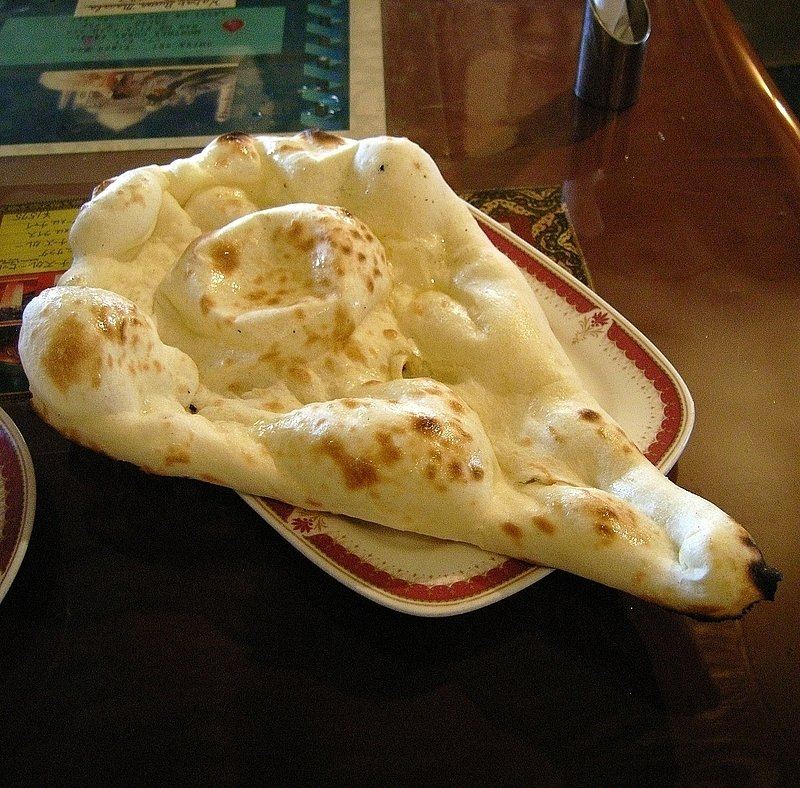

Tandoori Naan

Description:
Tandoori Naan shows us how a humble plant such as wheat can be elevated to the glory of the highest order.
Ingredients:
Steps:
- Make a dough with the flour and add some ghee and salt into it.
- Break the dough into small pieces and turn them into balls.
- Roll the balls into cylindrical disks, and preheat the oven.
- Apply some grease to a pan, place the pan in the oven.
- After two minutes filp the disk and cook until golden brown.